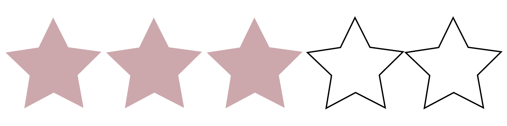
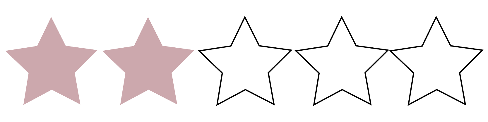
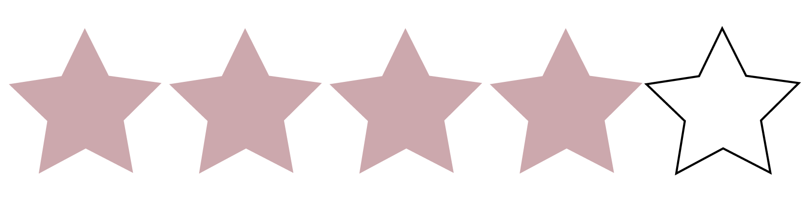

According to us, Gap has started to take sustainability into account, by implementing measures to reduce climate emissions, using preferable raw materials such as organic cotton for at least some of its garments, or by collaborating with several organisations, such as Ethical Trading Initiative (ETI), to improve the labor conditions in its supply chain. Still, a lot more can be done.
Gap has stated that it only uses wool from non-mulesed sheep, and does not use angora or exotic animal skin or hair. Unfortunately, it does use down feather without any accreditations, and uses leather without stating its sources. This means we can’t be sure about the welfare of the animals or workers involved in the production process.
Though Gap has some promising environmental measures in place and has improved some of its labor policies over the past year, it still needs to make changes in all areas, especially when it comes to paying a living wage to its workers. The good news? There are plenty of brands that are not only reliable and on-trend but are committed to reducing their impact on the environment, minimising harm to animals, and supporting the people that make their clothes.
Environmental Impact
Social Impact
Quality of Clothing
Our verdict on Gap is not terribly favourable, considering that Gap is an international brand, and it needs to implement more points of action in order to ease their status of being a fast fashion brand. Not to mention the horrific (and accurate) claims of child slavery and unfair acts of labor, where workers received little to no compensation for their work.